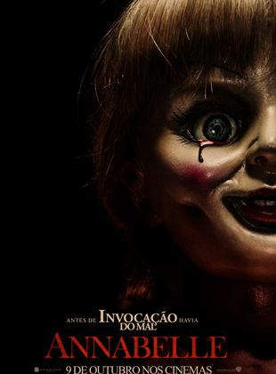

Direção:
John R. LeonettiElenco:
Annabelle Wallis, Ward Horton, Alfre WoodardGênero:
TerrorClassificação:
14 anosSinopse:
Em Anabelle, John (Ward Horton) encontrou o presente perfeito para sua futura esposa, Mia (Annabelle Wallis): uma rara boneca antiga com um lindo vestido. Mia fica bastante contente com seu presente, porém, sua animação com a boneca não duraria muito tempo. Certa noite, sua casa é invadida por membros de uma seita satânica que, buscando completar um ritual, atacam violentamente o casal. Após derramarem sangue, os cultistas são detidos. O que o casal não contava é que, mesmo depois de um tempo, as consequências dessa invasão continuariam a aterrorizar suas vidas, principalmente quando ocorrências sobrenaturais, envolvendo a boneca, passam a permear a vida de Mia.